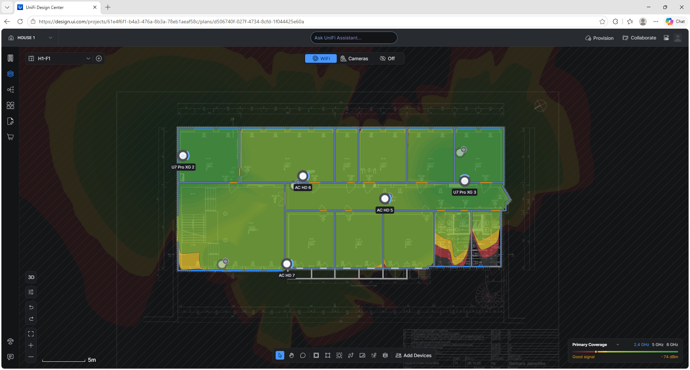
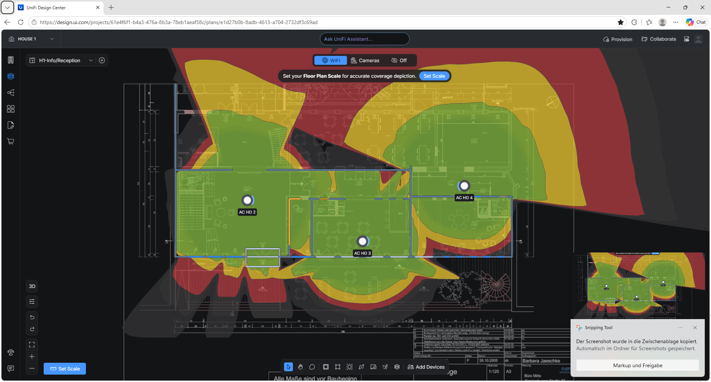

GLS Campus Berlin GmbH & Co. KG
01 — Overview
| SharePoint Online | Migration, organisation and permissions | Manage digital assets · Deploy a service |
| PowerShell | Backup scripts, tests and exception handling | Develop and test a software solution |
| Microsoft 365 / Windows | Accounts, workstations and user support | Process service requests |
| G DATA / MFA / KeePass | Security monitoring and authentication | Verify responsible use of digital resources |
| Unifi / Robocopy / SSD imaging | Network support, transfer tests and deployment | Manage infrastructure and continuity |
foreach ($item in $items) {
$fileRef = $item.FieldValues["FileRef"]
$remoteModified = ([datetime]$item.FieldValues["Modified"]).ToUniversalTime()
$relativePath = $fileRef.Replace("$SiteRelativeUrl/$LibraryName/", "")
$localFile = Join-Path $TargetLibraryPath $relativePath
$localFolder = Split-Path $localFile
if (!(Test-Path $localFolder)) {
New-Item -ItemType Directory -Path $localFolder -Force | Out-Null
}
$download = !(Test-Path $localFile) -or
((Get-Item $localFile).LastWriteTime.ToUniversalTime() -lt $remoteModified)
}$remoteFiles = $items | ForEach-Object {
$_.FieldValues["FileRef"].Replace("$SiteRelativeUrl/$LibraryName/", "")
}
$localFiles = Get-ChildItem -Path $TargetLibraryPath -Recurse -File
foreach ($file in $localFiles) {
$relativePath = $file.FullName.Replace($TargetLibraryPath + "\", "")
$delete = $relativePath -notin $remoteFiles
if ($delete) {
Write-Host "Deleted:" $relativePath
Remove-Item $file.FullName -Force
}
}Connect-MgGraph -Scopes "User.Read.All", "UserAuthenticationMethod.Read.All"
$users = Get-MgUser -All -Property Id,UserPrincipalName,AccountEnabled |
Where-Object { $_.AccountEnabled -eq $true }
foreach ($user in $users) {
$methodHello = Get-MgUserAuthenticationWindowsHelloForBusinessMethod `
-UserId $user.Id -ErrorAction Stop
$methodPass = Get-MgUserAuthenticationFido2Method `
-UserId $user.Id -ErrorAction Stop
$hasHello = if ($methodHello) { "YES" } else { "NO" }
$hasPass = if ($methodPass) { "YES" } else { "NO" }
}

05 — Reflection